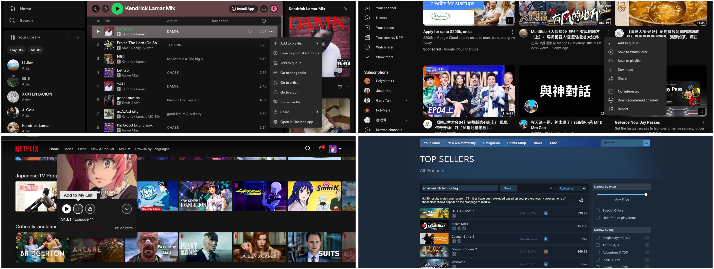

Part 1: Competitive Analysis
Selected websites:
Spotify: open.spotify.com | YouTube: www.youtube.com | Netflix: www.netflix.com | Steam: store.steampowered.com

Competitive Comparison Chart:
| Feature |
Spotify |
YouTube |
Netflix |
Steam |
| Favorating on Browsing Page |
√ |
√ |
√ |
× |
| Add to Auto-play Queue |
√ |
√ |
× |
- |
| Can Have Multiple Favorite Lists |
√ |
√ |
× |
× |
| Like/Dislike |
√ |
√ |
√ |
× |
| Sort Favorite List |
× |
√ |
× |
√ |
| Filter Favorite List |
× |
× |
× |
√ |
| Share Favorite List |
√ |
× |
× |
× |
Summary:
When reviewing these four websites, I discovered clear patterns and differences regarding their user experience.
Spotify is special because it offers almost all features except for sorting and filtering.
The unique factor that only Spotify has is its function to share the favorite list, enabling users to share their tastes with others.
Similar to Spotify, YouTube also covers most features, except for filtering and sharing.
It distinguishes itself from Spotify with its ability to sort the list.
Netflix has relatively very few features, limited to favorating while browsing and offering a like/dislike option.
Similarly, Steam also has few features. What makes it unique is its filtering option.
Using the principles from class, we can see these design choices actually make sense, primarily concerning the attention hierarchy.
YouTube and Spotify are the most "classical" content platforms.
Therefore, they require intensive list features to help users manage their content.
Spotify's success lies in placing more focus on the social aspect because music taste is highly shareable, whereas YouTube, as a more diverse user-generated-content platform, places more importance on sorting.
In contrast, Netflix is a more private streaming service, and the number of contents is not too large for users to manage.
Therefore, it does a good job of involving fewer extra features to enhance efficiency.
Steam is more like a store, so many features simply don't make sense according to its user personas. For example, the like/dislike feature before purchase.
Since games can be categorized in more objective ways, a filtering feature is also successful.
My Implementation Planning:
I'm planning to build a list-based game interface.
While the current design of Steam makes sense as a digital store, I think it's also a good idea to have a more lightweight, content-focused interface.
Not as a store with an additional shopping cart feature, but as a page for favoriting games.
Based on this idea, here's the list of features I'm considering adding:
- Favoriting while Browsing
- Naming the List
- Filtering
- Sorting
- Sharing (if I find an easy solution)
Part 3: Functionality
App Intention:
As mentioned above, this app is designed to enable gamers to make their favorite games into a list. Here's how I will incorporate different features:
Filter: Users can quickly find games they like by filtering by genre, ratings, or release dates.
Sort: Once they have a list of games, they can arrange it however they want - by release dates, prices, IGN scores, or alphabetically.
Aggregation: Users can add games to their different lists (games' names and categories are listed), name these lists, and share them with others.